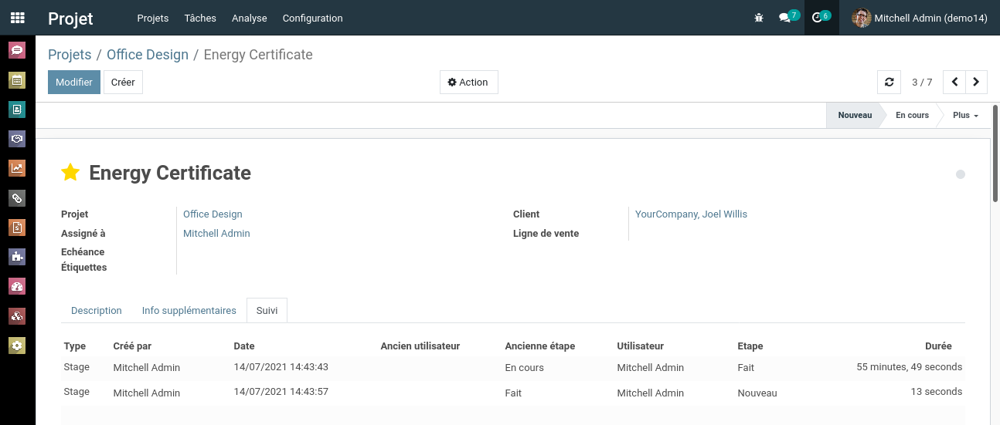

<section class="oe_container">
<div class="oe_spaced">
    <h2 class="oe_slogan" style="color: #875a7b;">Log Task activities like assignation changes and stage changes</h2>
    <h3 class="oe_slogan oe_mb32" style="text-align: center;">Log each change on tasks with their respective dates, users and durations</h3>
                <div class="oe_row_img oe_pic_ctr oe_mt32"></div>
    <ul>
        <li>Choose an existing task from your project and go to the <strong>Log</strong> section.</li>
        <li>Make any change on the task, i-e. change stage or assigned user.</li>
        <li>The system will track the changes made, with the old and new values, and the duration for which the task stayed on the assigned user or stage. For example you can check the time required for completion of a given task.</li>
    </ul>
</div>
</section>